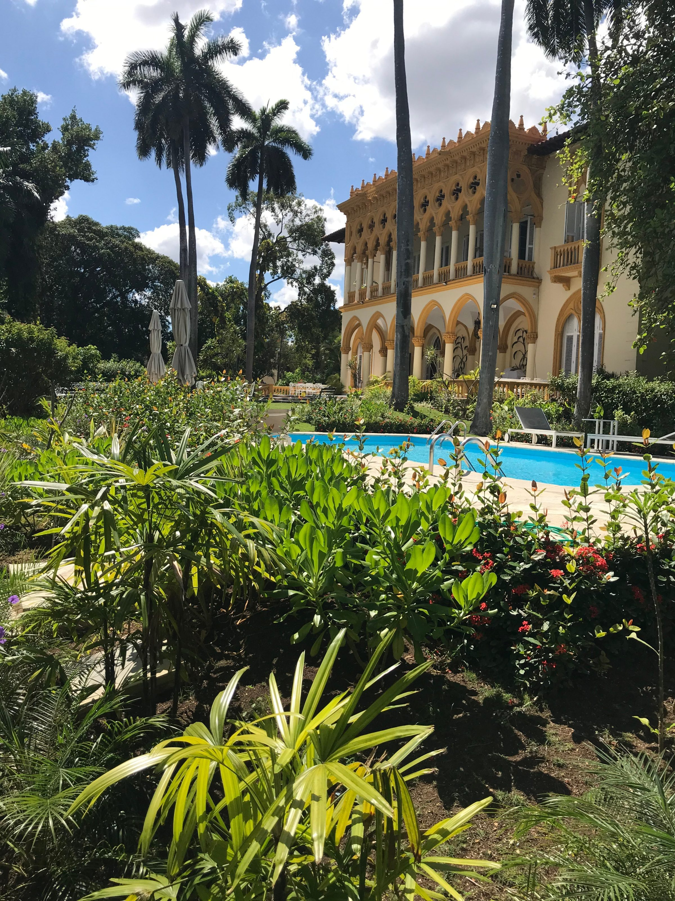
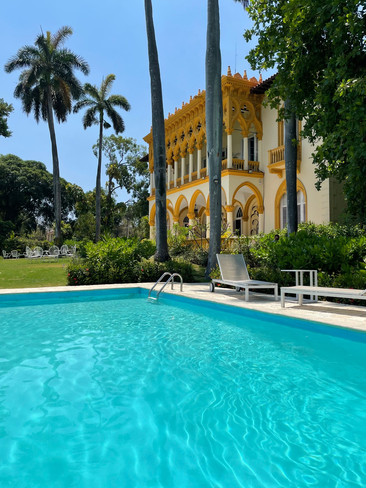
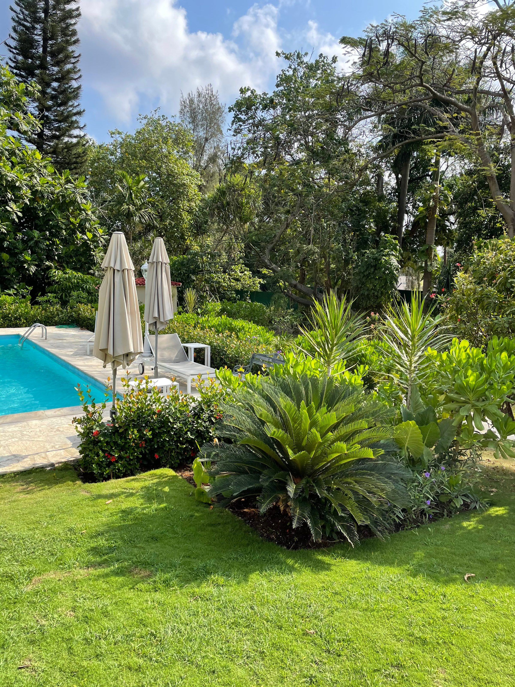
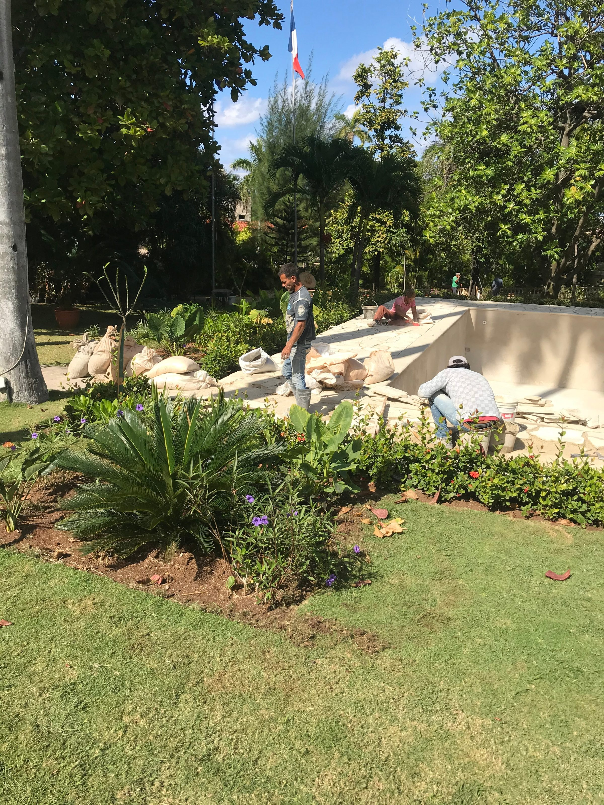
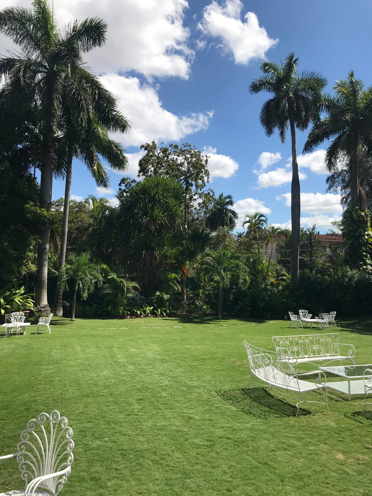
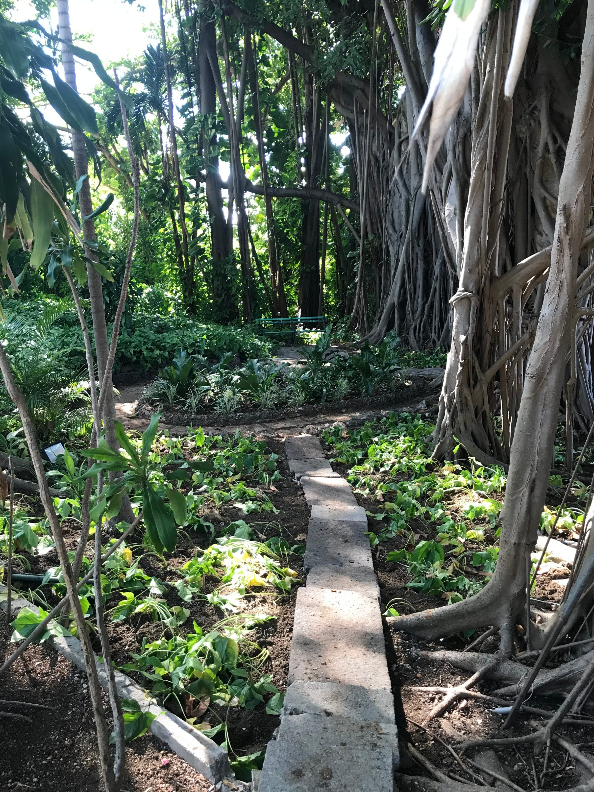
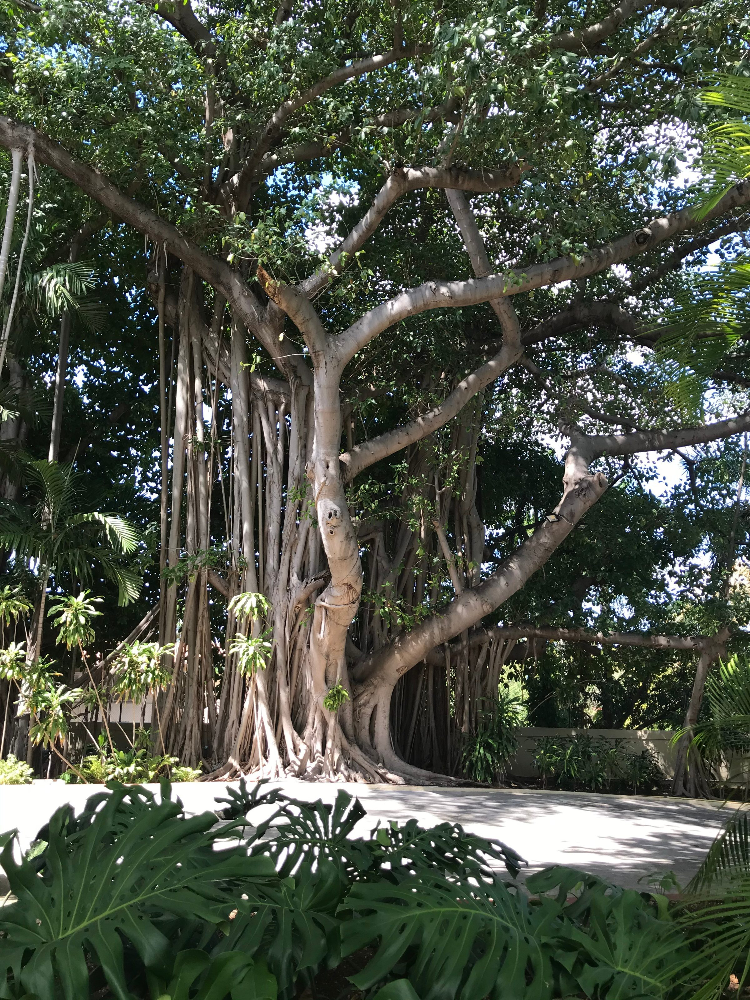
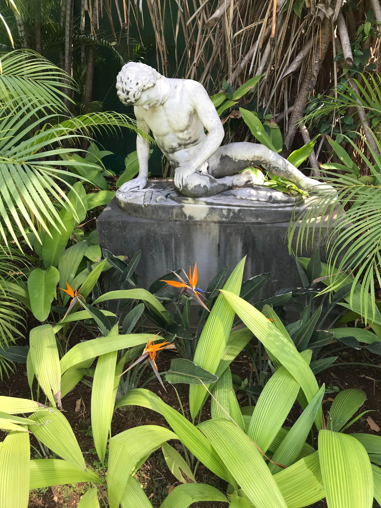

Le jardin de la résidence de l'Ambassadeur de France à La Havane a été conçu comme un lieu de partage et de mémoire — un espace qui raconte l'histoire du site tout en l'ancrant dans le présent.
Les matériaux existants, les bassins oubliés, la végétation patrimoniale — grands figuiers, palmiers royaux, plantations exotiques denses — ont été préservés et ouverts à la lumière. Une pelouse centrale crée une perspective vers une statue, reliant la villa au paysage.
Autour de cet axe se déploient des espaces intimes : jardins cachés, piscine, salons verts, potager. Le projet restitue au jardin sa fonction première : accueillir, rassembler et réinscrire le site dans une dynamique vivante et écologique.






